Inertial Systems
- Object not subjected to forces travels with constant speed along a straight line
- Accelerating/Rotating Systems are not inertial systems
- True inertial systems impossible to realise
Force vs Acceleration
- Change Magnitude of velocity direction: Force needed
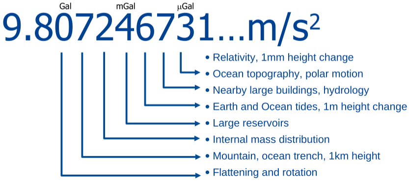
Newton's Law of Gravitation
\bm F_{12}=\frac{Gm_qm_2\bm r_{12}}{|\bm r_{12}|^3}\\
\bm F_{12}=-\bm F_{21}F12=∣r12∣3Gmqm2r12F12=−F21
-
Gravitational Force
- Proportional to both masses
- Inversely proportional to squared distances
-
Action = Reaction
-
Gravitational constant
- G=6.67384\times 10^{-11}\frac{m^3}{kg\cdot s}G=6.67384×10−11kg⋅sm3
- accuracy of constant improved over time (2022: 22ppm)
\bm g_{12}=\frac{Gm_2\bm r_{12}}{|\bm r_{12}|^3}g12=∣r12∣3Gm2r12
- Acceleration for point mass
- More complex bodies: Apply superposition principle
- Addition of multiple masses
- Introduction of density function
\bm g =\int\int\int_\Omega \frac{G\bm r_{12}}{|\bm r_{12}|^3}\rho(x,y,z)dxdydzg=∫∫∫Ω∣r12∣3Gr12ρ(x,y,z)dxdydz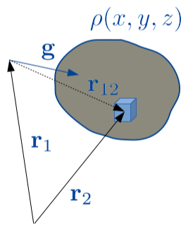
- Gravity \bm gg points along local plumbline
- Centre of mass
- Weighted position of all mass in the body
- Eases Equations of motion:
- Objects far away: Point masses e.g. for Kepler orbits, 3 body problems etc.
\bm r_{cm} =\frac 1M\int\int\int_\Omega \rho(x,y,z)\bm r_2dxdydzrcm=M1∫∫∫Ωρ(x,y,z)r2dxdydzGravity
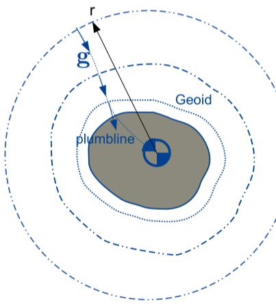
\lim_{r\rightarrow\infty}\bm g = \frac{GM\bm r}{|\bm r|^3}r→∞limg=∣r∣3GMr
| Gravity \bm gg |
Gravitational Potential VV |
| Vectorfield |
Scalarfield |
| Units m/s² |
Unit m²/s² |
| Observable |
Not directly observable (mathematical aid) |
| Gradient of the potential |
|
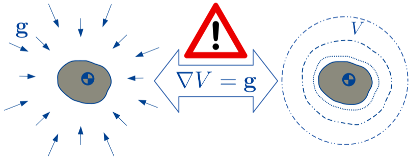
\bm g = -\frac{GM\bm r}{|\bm r|^3}\quad\quad\quad\quad V = \frac {GM}{|\bm r|}g=−∣r∣3GMrV=∣r∣GM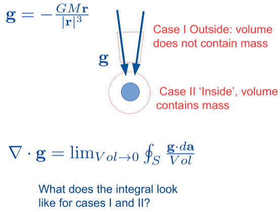
Outside
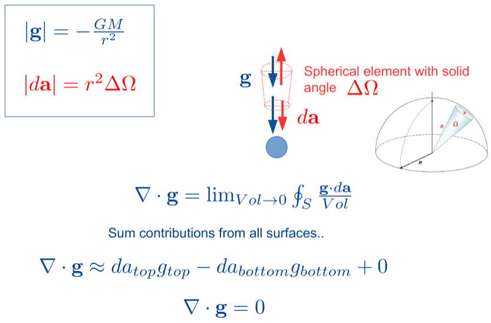
Inside
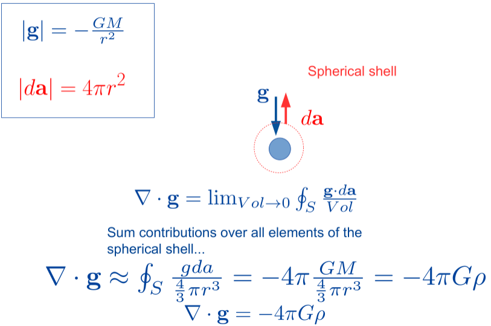
Laplace vs Poisson Equation
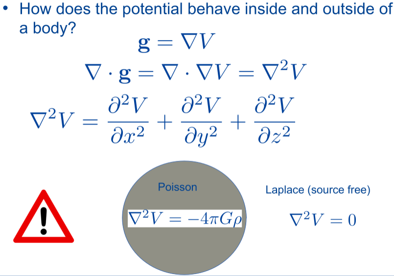
External field with Spherical harmonics
V(\theta,\lambda,r) =\frac{GM}{a}\sum^\infty_{n=0}\sum^{m=n}_{m=0}{(\frac ar)^{n+1}P_{nm}(\cos\theta)(C_{nm}m\lambda+S_{nm}\sin m\lambda)}V(θ,λ,r)=aGMn=0∑∞m=0∑m=n(ra)n+1Pnm(cosθ)(Cnmmλ+Snmsinmλ)
- Spherical harmonics are solutions of the Laplace equations
- Information on Gravity filed in C_{nm},S_{nm}Cnm,Snm
- Infinitely many terms with combinations of degree nn and order mm
- How many spherical harmonic coefficinetss do we nee for describing reference ellipsoid?
Homogenuous Sphere
- Variance of VV and gg along z-axis
- Dependence of g_zgz on VV
g_z(z)=\frac{\partial V}{\partial z}gz(z)=∂z∂V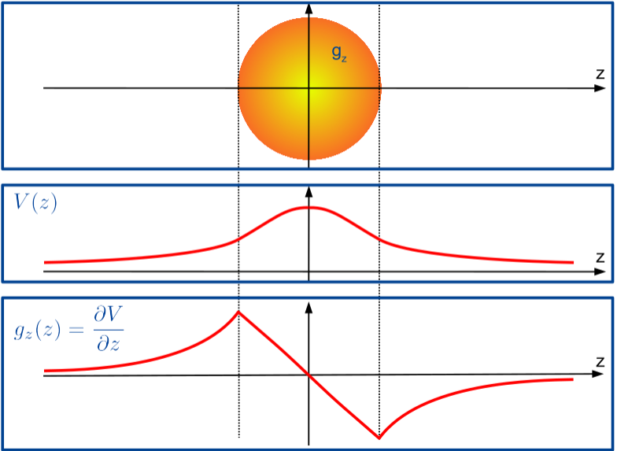
- But: Gravity INCREASES when going into mine:
- Non-homogenuous density distribution
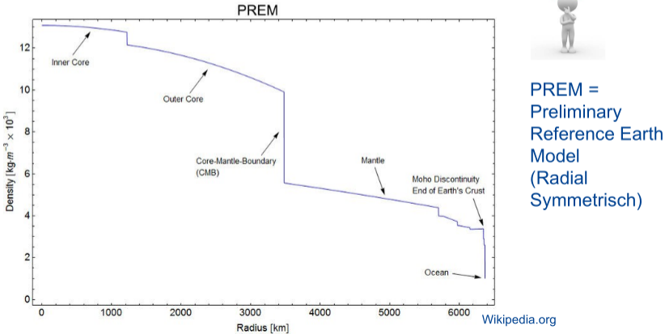
Gravitational Change Inside Earth
- Gravity starts decreasing when diving into mantle
- Until then: mass on top not enough to compensate "free air" effect (i.e effect from moving closer towards dense core of Earth)
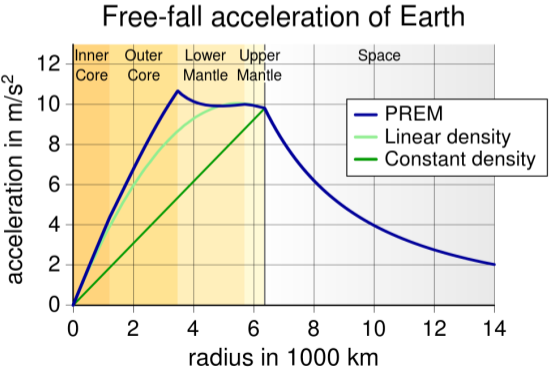
Earth's gravity field
Gravity:
- Not constant everywhere
- Change over time
- Decomposition:
- Ellipsoidal Gravity filed (WGS, GRS80)
- Static gravity field
- Time variable gravity field
Ellipsoidal Gravity Field
- Gravity arising from ellipsoidal mass
- Centrifugal force
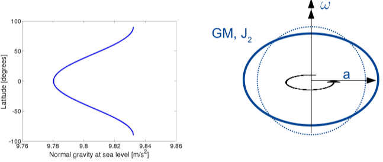
- Launch Rocket close to Equator (Rotation: 1666km/h)
Static Gravity Field
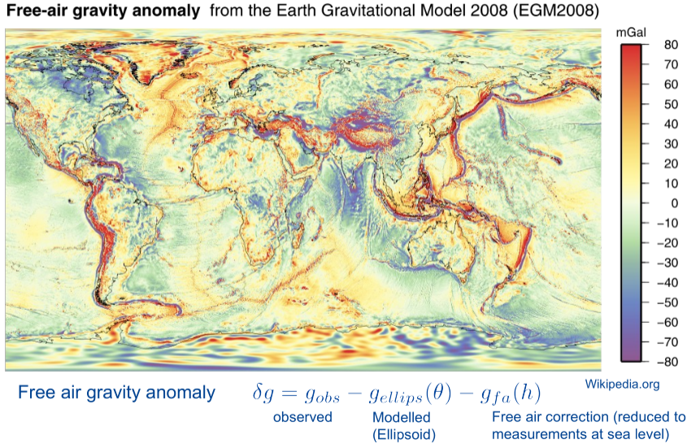
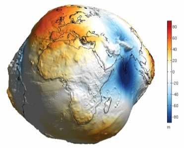
- Geoid (Surface of sea without motion)
- Natural choice as reference surface (0m height)
- Equipotential surface: Paths along geoid do not involve work
- Visible: tectonics, mantle convection
Time Variable Gravity Field
- Highly variable sub-daily to inter-annual
- 3 orders of magnitude smaller than static field
- Most changes occur in thin layer at surface of Earth (~15km thick)
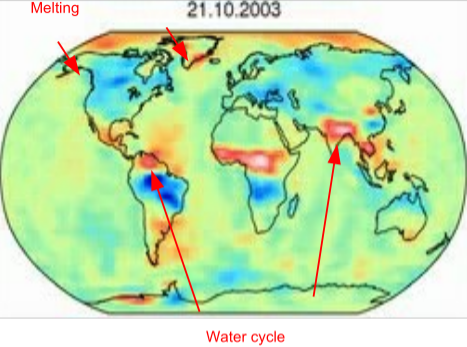
- Tides
- Hydrological water cycle
- Atmosphere
- Ocean
- Glacial isostatic adjustment (GIA)
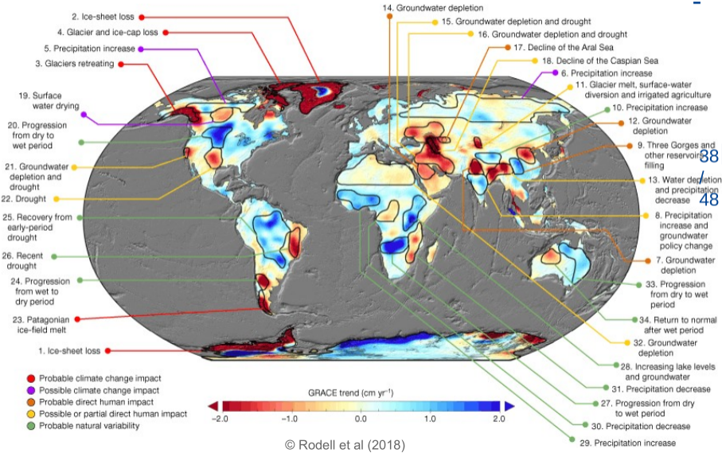
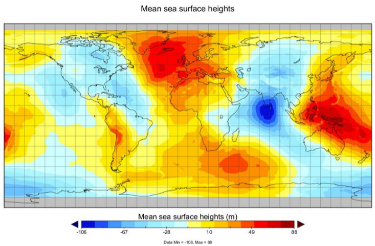
Mean Dynamic Topography
- MDT = MSSH - geoid
- Difference caused by steady ocean currents
Radar Altimetry
-
Precise orbit determination
- Doris, GPS, Laser Reflector
-
Altimeter instrument: 2-way radar pulse
-
Corrections: IB-response, Troposphere/Ionospheric Tides, Sea state bias, Oscillator drift, ...
-
Determination of sea surface height (relative to ellipsoid)
-
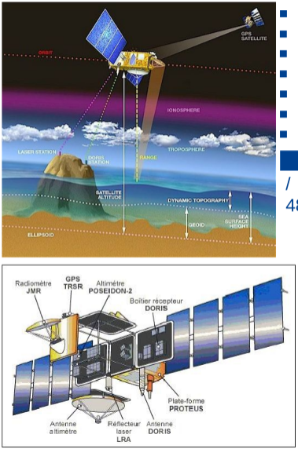
Retracking
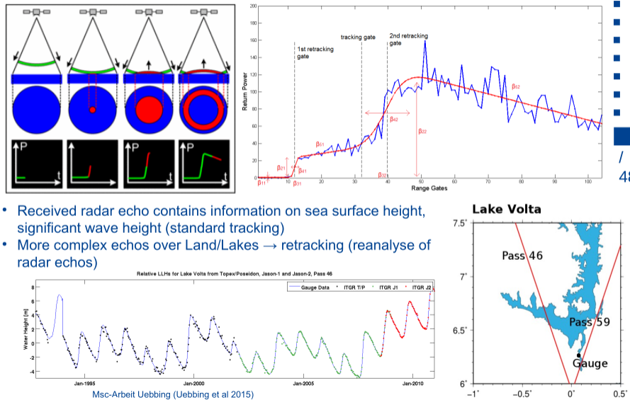
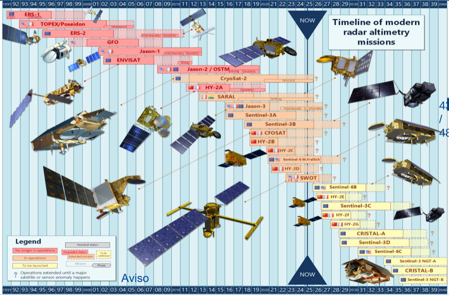
Revolution of inland water bodies
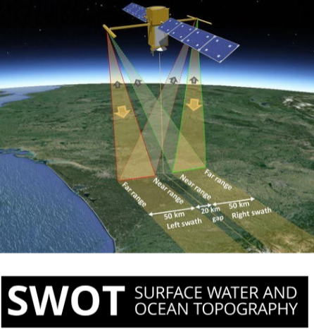
Monitoring of Inland water bodies
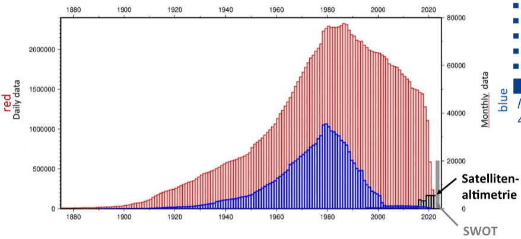
- Temporal eolution of available measurements at river gauges
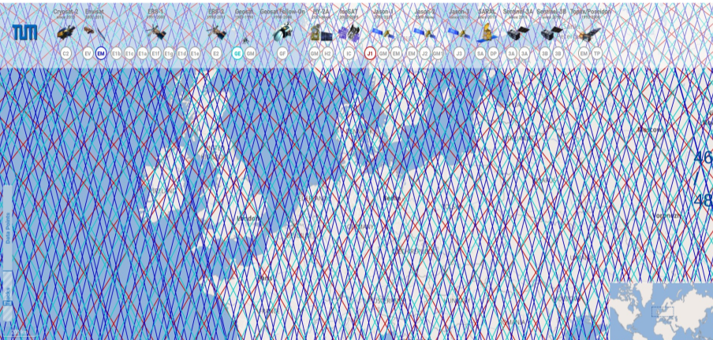
- Over 25 years of missions
- Both commerical and scientific uses
- Different repeated orbits (10-35 days)
- Applications.
- Ocean climate monitoring
- Large lakes and rivers
- Ocean tides
- Currents, eddies
- Bathymetry
- Sea Ice
- Wind stress, wave heights
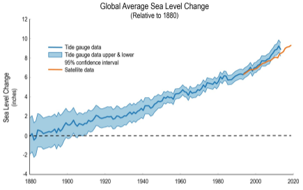
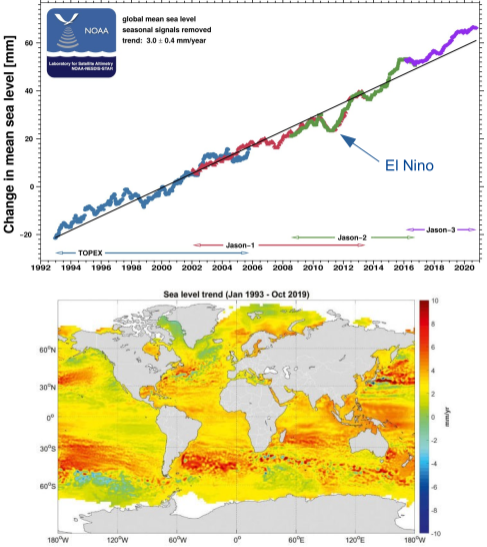
Summary
-
Gravity (vector field) is linked to gravitational potential (scalar field)
-
Potential obeys Laplace and Poisson equation, ouside and inside a mass, respectively
-
Earths gravity field can be split up in
- Ellipsoidal field
- Static gravity field
- Time variable gravity field
-
Ocean not at rest -> mean sea surface height does not correspond to geoid
-
Radar altimetry provides information sea surface height and wave heights